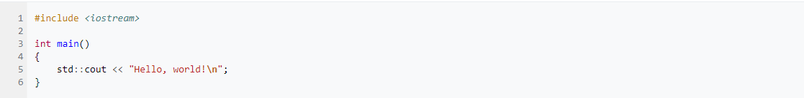

C++page
Links:
History C++
In 1979, Bjarne Stroustrup, a Danish computer scientist, began work on "C with Classes", the predecessor to C++. The motivation for creating a new language originated from Stroustrup's experience in programming for his PhD thesis. Stroustrup found that Simula had features that were very helpful for large software development, but the language was too slow for practical use, while BCPL was fast but too low-level to be suitable for large software development. When Stroustrup started working in AT&T Bell Labs, he had the problem of analyzing the UNIX kernel with respect to distributed computing. Remembering his PhD experience, Stroustrup set out to enhance the C language with Simula-like features.[17] C was chosen because it was general-purpose, fast, portable and widely used. As well as C and Simula's influences, other languages also influenced this new language, including ALGOL 68, Ada, CLU and ML.
Initially, Stroustrup's "C with Classes" added features to the C compiler, Cpre, including classes, derived classes, strong typing, inlining and default arguments.
In 1982, Stroustrup started to develop a successor to C with Classes, which he named "C++" (++ being the increment operator in C) after going through several other names. New features were added, including virtual functions, function name and operator overloading, references, constants, type-safe free-store memory allocation (new/delete), improved type checking, and BCPL style single-line comments with two forward slashes (//). Furthermore, Stroustrup developed a new, standalone compiler for C++, Cfront.
In 1984, Stroustrup implemented the first stream input/output library. The idea of providing an output operator rather than a named output function was suggested by Doug McIlroy[1] (who had previously suggested Unix pipes).
In 1985, the first edition of The C++ Programming Language was released, which became the definitive reference for the language, as there was not yet an official standard.[19] The first commercial implementation of C++ was released in October of the same year.[16]
In 1989, C++ 2.0 was released, followed by the updated second edition of The C++ Programming Language in 1991.[20] New features in 2.0 included multiple inheritance, abstract classes, static member functions, const member functions, and protected members. In 1990, The Annotated C++ Reference Manual was published. This work became the basis for the future standard. Later feature additions included templates, exceptions, namespaces, new casts, and a Boolean type.
In 1998, C++98 was released, standardizing the language, and a minor update (C++03) was released in 2003.
After C++98, C++ evolved relatively slowly until, in 2011, the C++11 standard was released, adding numerous new features, enlarging the standard library further, and providing more facilities to C++ programmers. After a minor C++14 update released in December 2014, various new additions were introduced in C++17.[21] After becoming finalized in February 2020,[22] a draft of the C++20 standard was approved on 4 September 2020 and officially published on 15 December 2020.[23][24]
On January 3, 2018, Stroustrup was announced as the 2018 winner of the Charles Stark Draper Prize for Engineering, "for conceptualizing and developing the C++ programming language".[25]
As of 2021 C++ ranked fourth on the TIOBE index, a measure of the popularity of programming languages, after C, Java, and Python.
Etymology
According to Stroustrup, "the name signifies the evolutionary nature of the changes from C". This name is credited to Rick Mascitti (mid-1983) and was first used in December 1983. When Mascitti was questioned informally in 1992 about the naming, he indicated that it was given in a tongue-in-cheek spirit. The name comes from C's ++ operator (which increments the value of a variable) and a common naming convention of using "+" to indicate an enhanced computer program.
During C++'s development period, the language had been referred to as "new C" and "C with Classes" before acquiring its final name.
language
The C++ language has two main components: a direct mapping of hardware features provided primarily by the C subset, and zero-overhead abstractions based on those mappings. Stroustrup describes C++ as "a light-weight abstraction programming language [designed] for building and using efficient and elegant abstractions";[10] and "offering both hardware access and abstraction is the basis of C++. Doing it efficiently is what distinguishes it from other languages."[55]
C++ inherits most of C's syntax. The following is Bjarne Stroustrup's version of the Hello world program that uses the C++ Standard Library stream facility to write a message to standard output:

Object storage
As in C, C++ supports four types of memory management: static storage duration objects, thread storage duration objects, automatic storage duration objects, and dynamic storage duration objects
Static storage duration objects
Static storage duration objects are created before main() is entered (see exceptions below) and destroyed in reverse order of creation after main() exits. The exact order of creation is not specified by the standard (though there are some rules defined below) to allow implementations some freedom in how to organize their implementation. More formally, objects of this type have a lifespan that "shall last for the duration of the program".[59]
Static storage duration objects are initialized in two phases. First, "static initialization" is performed, and only after all static initialization is performed, "dynamic initialization" is performed. In static initialization, all objects are first initialized with zeros; after that, all objects that have a constant initialization phase are initialized with the constant expression (i.e. variables initialized with a literal or constexpr). Though it is not specified in the standard, the static initialization phase can be completed at compile time and saved in the data partition of the executable. Dynamic initialization involves all object initialization done via a constructor or function call (unless the function is marked with constexpr, in C++11). The dynamic initialization order is defined as the order of declaration within the compilation unit (i.e. the same file). No guarantees are provided about the order of initialization between compilation units.
Objects
Main article: C++ classes
C++ introduces object-oriented programming (OOP) features to C. It offers classes, which provide the four features commonly present in OOP (and some non-OOP) languages: abstraction, encapsulation, inheritance, and polymorphism. One distinguishing feature of C++ classes compared to classes in other programming languages is support for deterministic destructors, which in turn provide support for the Resource Acquisition is Initialization (RAII) concept.
Reference
https://en.wikipedia.org/wiki/C%2B%2B